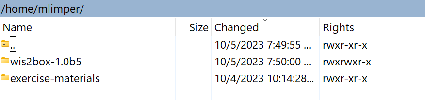

Accessing your student VM
Learning outcomes
By the end of this practical session, you will be able to:
- access your student VM over SSH and WinSCP
- verify the required software for the practical exercises is installed
- verify you have access to exercise materials for this training on your local student VM
Introduction
As part of locally run wis2box training sessions, you can access your personal student VM on the local training network named "WIS2-training".
Your student VM has the following software pre-installed:
- Ubuntu 22.0.4.3 LTS ubuntu-22.04.3-live-server-amd64.iso
- Python 3.10.12
- Docker 24.0.6
- Docker Compose 2.21.0
- Text editors: vim, nano
Note
If you want to run this training outside of a local training session, you can provide your own instance using any cloud provider, for example:
- GCP (Google Cloud Platform) VM instance
e2-medium - AWS (Amazon Web Services) ec2-instance
t3a.medium - Azure (Microsoft) Azure Virtual Machine
standard_b2s
Select Ubuntu Server 22.0.4 LTS as OS.
After creating your VM ensure you have installed python, docker and docker compose, as described at wis2box-software-dependencies.
The release archive for wis2box used in this training can be downloaded as follows:
wget https://github.com/wmo-im/wis2box/releases/download/1.0b5/wis2box-setup-1.0b5.zip
unzip wis2box-setup-1.0b5.zip
You can always find the latest 'wis2box-setup' archive at https://github.com/wmo-im/wis2box/releases.
The exercise material used in this training can be downloaded as follows:
wget https://training.wis2box.wis.wmo.int/exercise-materials.zip
unzip exercise-materials.zip
The following additional Python packages are required to run the exercise materials:
pip3 install minio
pip3 install pywiscat
pip3 install pywis-pubsub
If you are using the student VM provided during local WIS2 training sessions, the required software will already be installed.
Connect to your student VM on the local training network
Use the following configuration to connect your PC on the local Wi-Fi broadcasted in the room during WIS2 training:
- SSID: WIS2-training
- password: dataismagic!
Use an SSH client to connect to your student VM using the following:
- Host: (provided during in-person training)
- Port: 22
- Username: (provided during in-person training)
- Password: wis2training (default password to be changed after logging in)
Tip
Contact a trainer if you are unsure about the hostname/username or have issues connecting.
Once connected, please change your password to ensure others cannot access your VM:
limper@student-vm:~$ passwd
Changing password for testuser.
Current password:
New password:
Retype new password:
passwd: password updated successfully
Verify software versions
To be able to run wis2box, the student VM should have Python, Docker and Docker Compose pre-installed.
Check Python version:
python3 --version
Python 3.10.12
Check docker version:
docker --version
Docker version 24.0.6, build ed223bc
Check Docker Compose version:
docker compose version
Docker Compose version v2.21.0
To ensure your user can run Docker commands your user has been added to the docker group.
To test that your user can run docker hello-world, run the following command:
docker run hello-world
returns:
Hello from Docker!
This message shows that your installation appears to be working correctly.
...
Inspect the exercise materials
Inspect the contents of your home directory; these are the materials used as part of the training and practical sessions.
ls ~/
exercise-materials wis2box-1.0b5
You can use WinSCP to connect to your instance and inspect the contents of your home directory and download or upload files between your VM and your local PC.
Open WinSCP and click on the "New Site". You can create a new SCP connection to your VM as follows:

Click 'Save' and then 'Login' to connect to your VM.
And you should be able to see the following content:

Conclusion
Congratulations!
In this practical session, you learned how to:
- access your student VM over SSH and WinSCP
- verify the required software for the practical exercises is installed
- verify you have access to exercise materials for this training on your local student VM